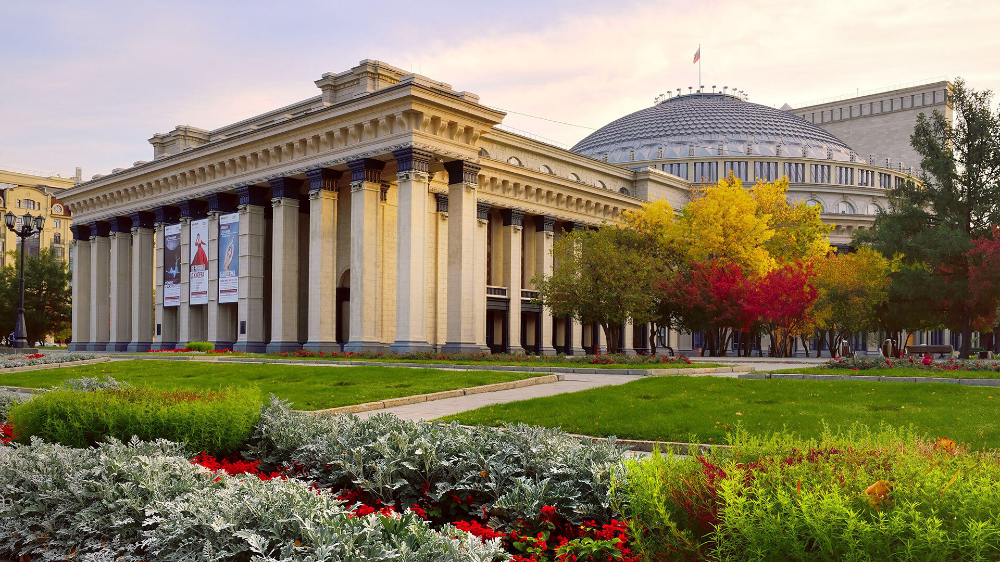
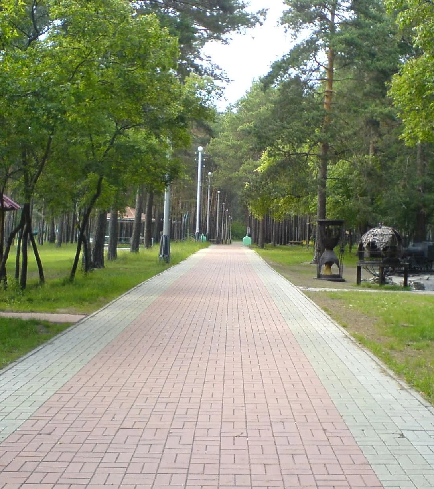
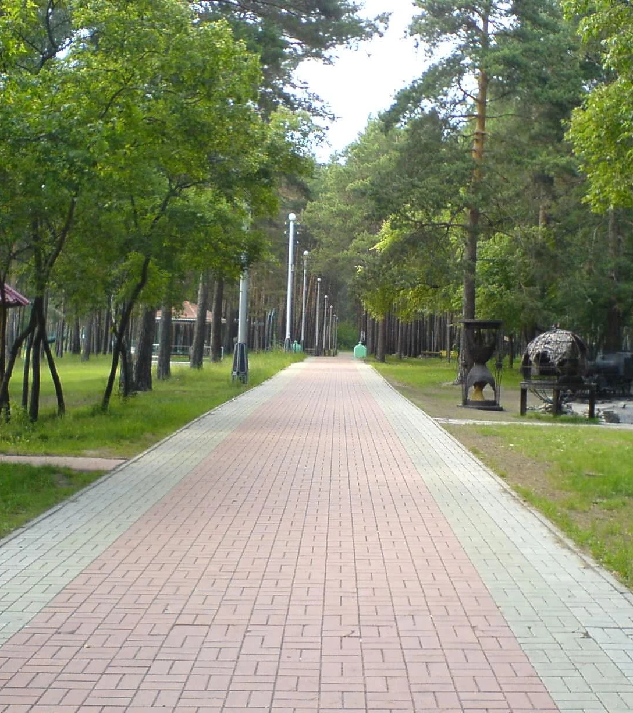
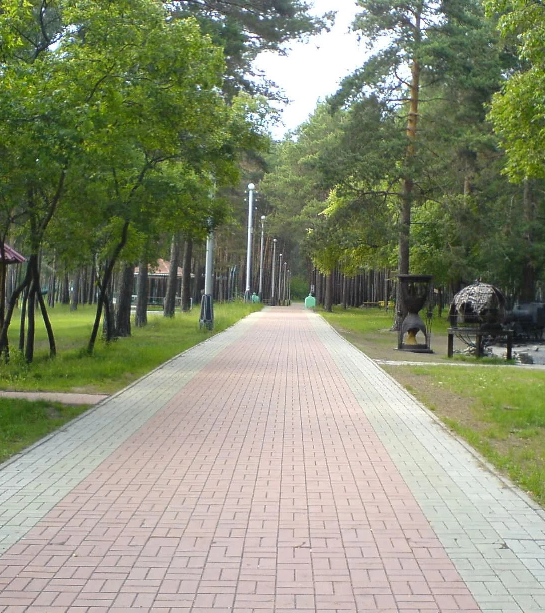

Novosibirsk, the third-largest city in Russia, is a bustling metropolis known as the scientific and cultural capital of Siberia. Founded in 1893, this vibrant city is celebrated for its rich history, thriving arts scene, and dynamic growth, making it a key hub in the heart of Siberia.

HISTORICAL OVERVIEW
Novosibirsk, the third-largest city in Russia, was founded in 1893 as a transport hub on the Trans-Siberian Railway. Initially named Novonikolayevsk in honor of Tsar Nicholas II, the city rapidly grew due to its strategic location and the influx of settlers and industries. By the early 20th century, it had become a significant commercial center, boasting various educational, cultural, and industrial establishments.
The city played a pivotal role during the Soviet era, particularly in World War II, when many factories and scientific institutions were relocated here from the western parts of the USSR. Post-war, Novosibirsk continued to expand, evolving into a major scientific and research hub with the establishment of Akademgorodok in the 1950s, the "Science City" that is home to numerous scientific and educational institutions.
Today, Novosibirsk is not only a central point on the map of Russia but also a vibrant cultural and economic center, reflecting a rich history of growth and transformation.
CULTURAL ATTRACTIONS
Novosibirsk is a beacon of culture in Siberia, housing an array of significant cultural institutions:
Novosibirsk State Academic Opera and Ballet Theatre (NOVAT): Renowned for its impressive architecture and scale, NOVAT is one of the largest opera houses in Russia and hosts numerous performances that attract culture enthusiasts from all over the world.
Novosibirsk State Art Museum: Featuring a vast collection of Russian icons, Siberian baroque art, and works by modern Russian artists, this museum offers a deep dive into the rich artistic traditions of the region.
The Novosibirsk Zoo: One of the largest zoos in Russia, it is famous for its conservation efforts and the variety of species it houses, including rare and endangered animals.
These attractions, among others, not only serve as gateways to understanding the city’s past and present but also celebrate its ongoing cultural evolution. Whether you’re a history buff, art lover, or theatre-goer, Novosibirsk offers a diverse range of activities and sites that enrich the visitor experience.
ATTRACTIONS
Central Park: Nestled at the core of Novosibirsk, Central Park serves as a vibrant hub of activity and greenery. It's the perfect destination for families, sports enthusiasts, and anyone looking to relax amidst nature. The park often hosts seasonal festivals and markets, making it a lively spot throughout the year. A picture showcasing its busy avenues or peaceful green spaces would illustrate its dual character.
Novosibirsk Zoo: One of the top zoological parks in Russia, the Novosibirsk Zoo is renowned for its extensive collection of animals and its efforts in wildlife conservation. Capturing images of exotic animals or the beautifully landscaped settings would highlight the zoo's dedication to providing both an educational and enjoyable experience.
Mikhailovsky Embankment: This riverside promenade is a favorite spot among locals and tourists alike for its stunning views of the Ob River and the city skyline. It is a perfect place for a leisurely stroll, cycling, or just enjoying the sunset. Photos of the embankment during different times of the day or during public events would vividly capture its beauty and lively atmosphere.
TOURIST RECOMMENDATIONS
Accommodation: Novosibirsk offers a variety of accommodation options, ranging from luxurious hotels to affordable hostels. Staying near the central areas, such as near Lenin Square or the riverbanks, provides easy access to the city's main attractions. A welcoming image of a top-rated hotel or a quaint bed and breakfast would fit well here.
Dining: Explore the rich flavors of Siberian cuisine mixed with international influences in Novosibirsk’s diverse culinary scene. Essential local dishes to try include Pelmeni (Siberian dumplings) and Stroganina (sliced frozen fish). Images of these dishes or a popular dining spot would enhance the appeal.
Transportation: Novosibirsk’s efficient public transit system, featuring metros, buses, and taxis, makes navigating the city straightforward and affordable. For tourists, a transport card is a practical option. Including an image of public transportation in action or a city transit map would provide useful visual information.
ECONOMIC PROFILE
Novosibirsk is a powerhouse of industrial and economic activity in Siberia. As a major center for science and technology, the city hosts several high-tech parks and business incubators that drive its economic growth. Major industries include information technology, energy, and manufacturing, with numerous factories located in the industrial district.
The city is also a significant retail hub, boasting large shopping centers like the Mega Shopping Mall and Sun City, which offer a mix of international and local brands. These centers not only serve as shopping destinations but also as social and cultural meeting points for locals and visitors alike.
EDUCATIONAL INSTITUTIONS
Novosibirsk is renowned for its contributions to education and research, with Novosibirsk State University (NSU) at the forefront. Located in Akademgorodok, the "Academic Town," NSU is surrounded by more than 35 research institutes making it one of Russia's most influential centers of research and development.
The university is known for its strong programs in physics, biology, chemistry, and mathematics. It collaborates closely with the adjacent research institutions, providing students with unparalleled access to cutting-edge research and career opportunities in various scientific fields.
COMMUNITY LIFE
Novosibirsk thrives with a vibrant community life that caters to both residents and visitors. The city boasts numerous parks and green spaces where people can relax, play, and connect. Central Park, one of the largest in the city, is a popular gathering place featuring walking paths, playgrounds, and seasonal events that draw crowds year-round.
For those interested in a more tranquil environment, the Botanical Garden offers a lush escape with its extensive collection of flora and themed gardens. These spaces play a crucial role in the social and recreational lives of Novosibirsk’s residents, hosting everything from casual picnics to organized sports.

EVENTS & FESTIVALS
Novosibirsk's calendar is packed with a variety of events and festivals that highlight its rich cultural tapestry. The city is home to the Novosibirsk International Jazz Festival, which attracts artists and audiences from across the globe. Another highlight is the Siberian Beer Festival, where locals and visitors alike savor craft beers and local cuisine.
Winter brings the magical Siberian Snow Sculpture Festival, an event that transforms local parks into winter wonderlands. These events not only provide entertainment but also foster a sense of community and celebrate the unique culture of Siberia.
.jpg)
.jpg)
.jpg)
.jpg)
.jpg)
.jpg)
.jpg)
.jpg)
.jpg)
.jpg)
.jpg)
.jpg) 

.jpg)